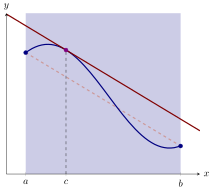
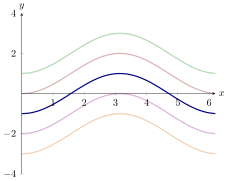

Here we see a key theorem of calculus.
Here are some interesting questions involving derivatives:
-
(a)
- Suppose you toss a ball into the air and then catch it. Must the ball’s
vertical velocity have been zero at some point?
-
(b)
- Suppose you drive a car from toll booth on a toll road to another toll
booth miles away in half of an hour. Must you have been driving at miles
per hour at some point?
-
(c)
- Suppose two different functions have the same derivative. What can you
say about the relationship between the two functions?
While these problems sound very different, it turns out that the problems are very
closely related. We’ll start simply:
Rolle’s Theorem Suppose that is differentiable on the interval , is continuous on the
interval , and .
Then for some .
We can now answer our first question above.
Suppose you toss a ball into the air and then catch it. Must the ball’s vertical
velocity have been zero at some point?
Let be the position of the ball at time . Our
interval in question will be we may assume that is continuous on and differentiable
on . We may now apply Rolle’s Theorem to see at some time , . Hence the velocity
must be zero at some point.
Rolle’s Theorem is a special case of a more general theorem.
Mean Value Theorem Suppose that has a derivative on the interval and is
continuous on the interval .

Then for some .
We can now answer our second question above.
Suppose you drive a car from toll booth on a toll road to another toll booth miles
away in half of an hour. Must you have been driving at miles per hour at some
point?
If is the position of the car at time , and hours is the starting time with hours
being the final time, then we may assume that is continuous on and differentiable
on . Now the Mean Value Theorem states there is a time Since the derivative of
position is velocity, this says that the car must have been driving at miles per hour
at some point.
Now we will address the unthinkable, could there be a continuous function on whose
derivative is zero on that is not constant? As we will see, the answer is
“no.”
If for all in an interval , then is constant on .
Let be two points in . Since is
continuous on and differentiable on , by the Mean Value Theorem we know for some
in the interval . Since we see that . Moreover, since and were arbitrarily chosen,
must be the constant function.
Now let’s answer our third question.
Suppose two different functions have the same derivative. What can you say about
the relationship between the two functions?
Set , so . Now on the interval . This means that where is some constant. Hence
Describe all functions whose derivative is .
One such function is , so all such functions
have the form ,

Finally, let us investigate two young mathematicians who run to class.
Two students Devyn and Riley raced to class. Was there a point during the race that
Devyn and Riley were running at exactly the same velocity?
Let represent Devyn’s
position with respect to time, and let represent Riley’s position with respect to time.
Let be the starting time of the race, and be the end of the race. Set Note, we may
assume that and are continuous on and that they are differentiable on . Hence the
same is true for . Since both runners start and finish at the same place,
In fact, this shows us that the average rate of change of is . Hence by the
mean value theorem, there is a point with . However, Hence at , this
means that there was a time when they were running at exactly the same
velocity.